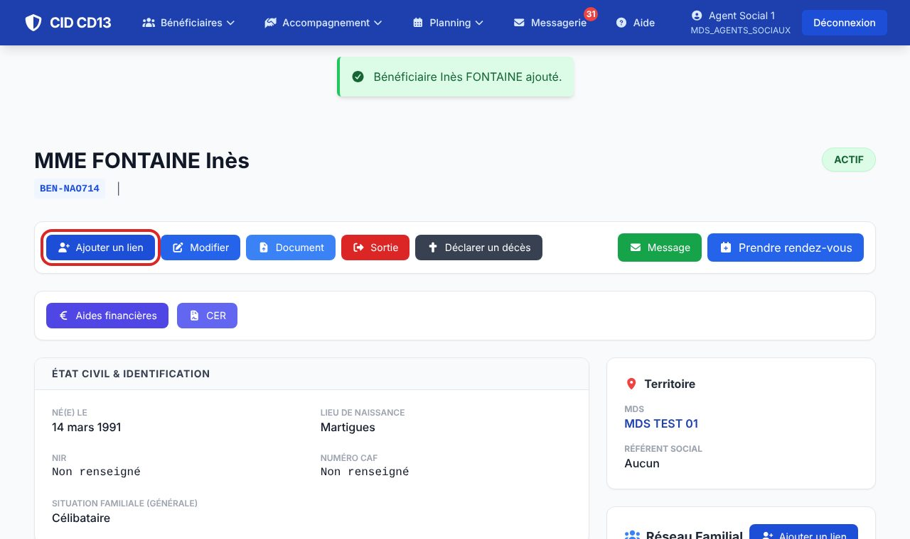
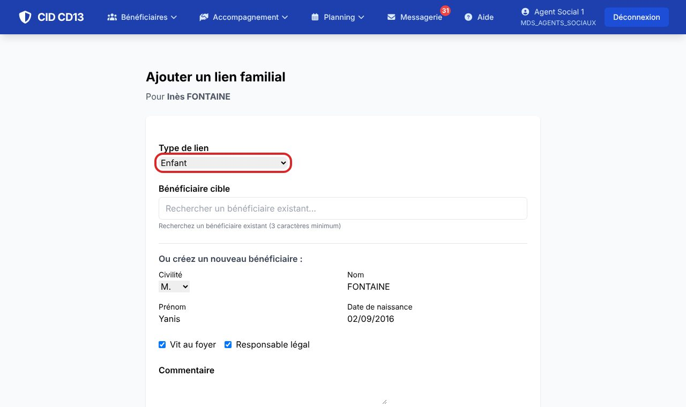
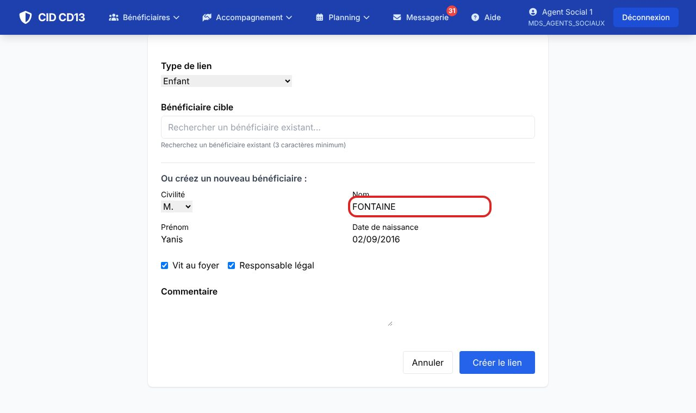
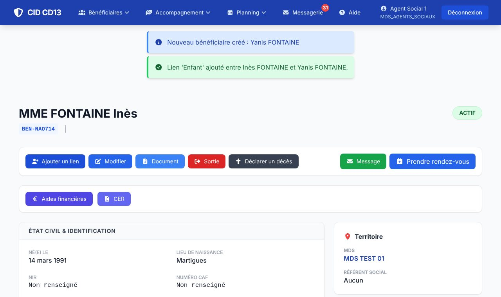

Avant de commencer
- Ouvrez la fiche du bénéficiaire (Chercher un bénéficiaire).
1Ouvrir « Ajouter un lien »

- Sur la fiche, cliquez sur Ajouter un lien (en haut, ou dans le cadre Réseau familial).
2Choisir le lien et la personne


- Choisissez le type de lien : Parent, Enfant, Conjoint, Placement, Tuteur ou Tiers.
- La personne est déjà connue de CID ? Tapez au moins 3 lettres de son nom dans Bénéficiaire cible et choisissez-la dans la liste.
- Sinon, remplissez « Ou créez un nouveau bénéficiaire » : civilité, nom, prénom, date de naissance.
- Cochez Vit au foyer si la personne vit sous le même toit, et Responsable légal si c'est le cas.
- Cliquez sur Créer le lien.
Cherchez toujours la personne avant d'en créer une nouvelle : un enfant déjà suivi par la MDS ne doit pas avoir deux fiches.
3Vérifier le réseau familial

- Deux messages confirment la création de la personne et du lien.
- Elle apparaît dans le cadre Réseau familial, avec son lien et la mention Foyer si elle vit sous le même toit.
- Cliquez sur son nom pour ouvrir sa propre fiche.
Bon à savoir
- Le lien est enregistré dans les deux sens : sur la fiche de l'enfant, la mère apparaît comme parent.
- Une personne créée ici reprend l'adresse et la MDS du bénéficiaire. Si elle vit ailleurs, corrigez sa fiche avec Modifier.
- Les personnes cochées Vit au foyer donnent le nombre de personnes au foyer proposé dans une demande d'AFASE.
Et ensuite ?
Cliquez sur une image pour l'agrandir. Le cadre rouge montre où cliquer ou quoi remplir. Toutes les données affichées sont fictives.